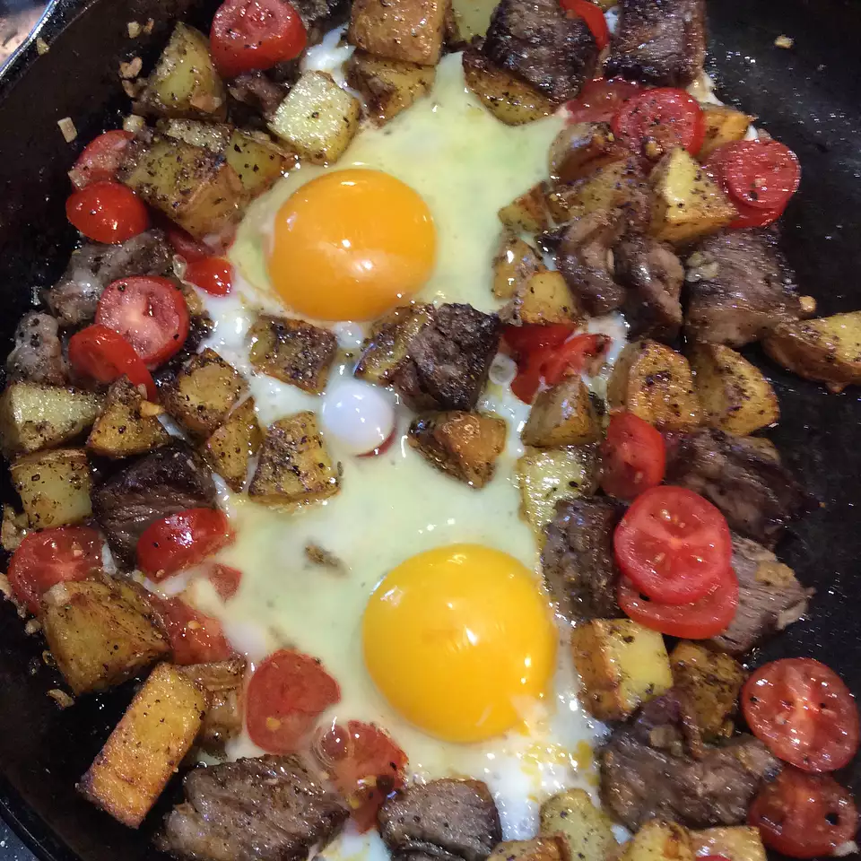

Steak and Egg Hash

Description
Pan-fried potatoes and onions are topped with eggs, cherry tomato halves, and sliced steak for a hearty breakfast--or dinner!
Ingredients
- 1 beef sirloin steak, sliced
- 1 pound potatoes, cut into small pieces
- Salt and ground black pepper to taste
- 1 sweet onion, chopped
- 4 Eggland's Best Eggs, large
- 1 cup cherry tomatoes, halved
- Dried Italian seasoning
Steps
- Cook the steak in the cast iron skillet over medium heat, flipping half way through until entirely cooked through. Remove to a plate and reserve the drippings in the skillet.
- Add the potatoes to the skillet and season with salt and pepper.
- Cook, stirring occasionally, until tender, (8 to 12 minutes).
- Add the onion and cook until lightly browned and the potatoes are cooked through, (3 to 5 minutes).
- Cut steak into pieces and return to skillet, reduce the heat to low.
- Make 4 shallow wells in the potato mixture and crack an egg into each one.
- Scatter the tomatoes throughout the skillet and cover; cooking until the egg whites are set but the yolks are still runny ( 6 to 12 minutes)
- Season the eggs with salt and pepper, sprinkle with Italian Seasoning, and enjoy!
Home